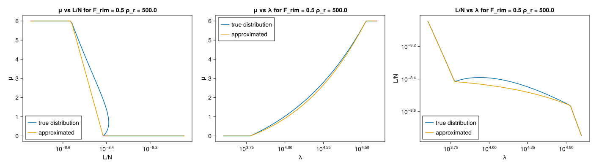
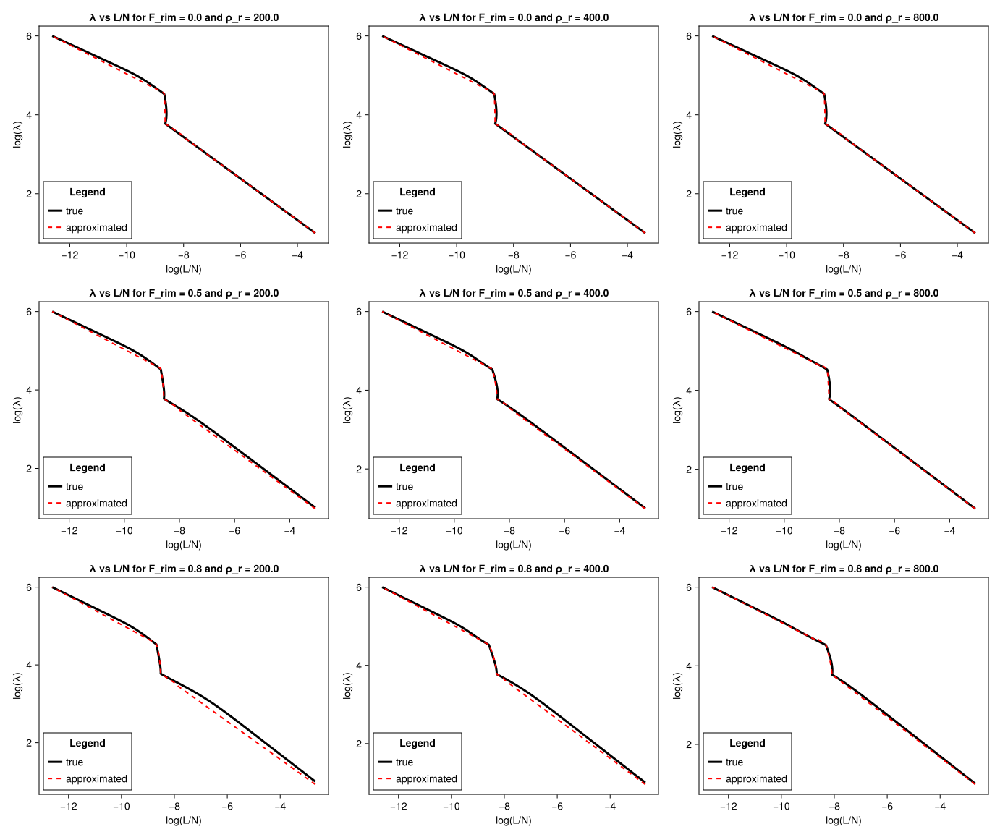
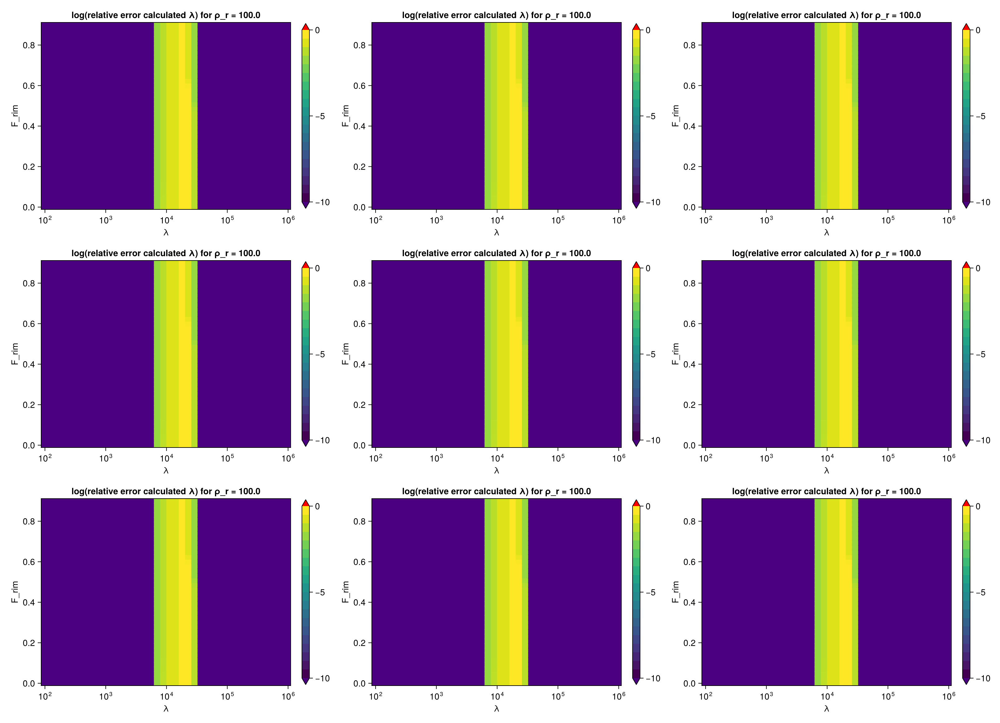
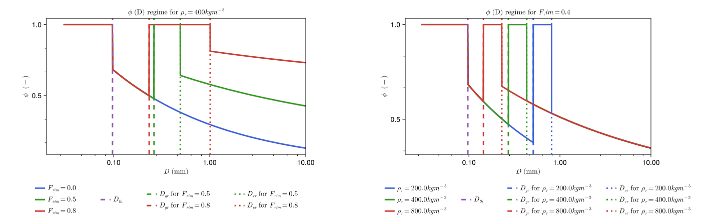
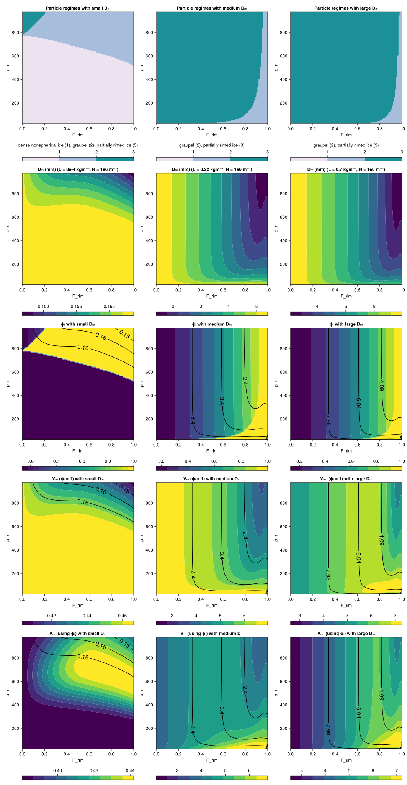
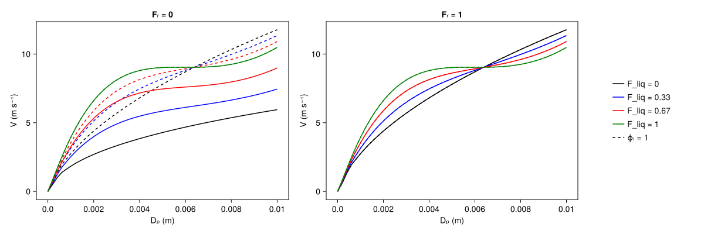
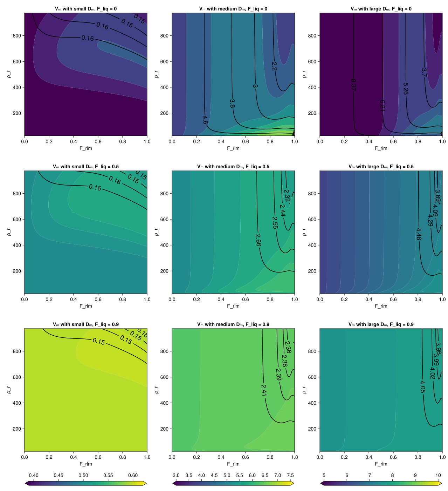
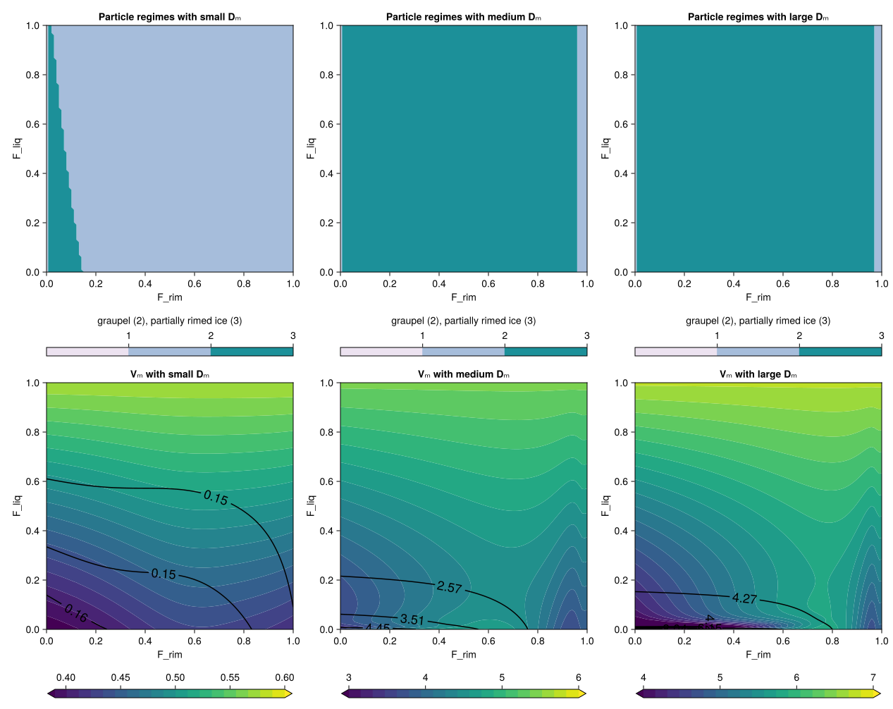
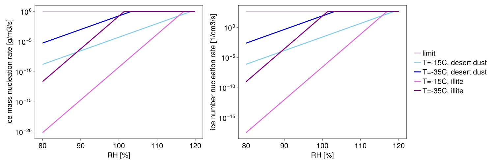
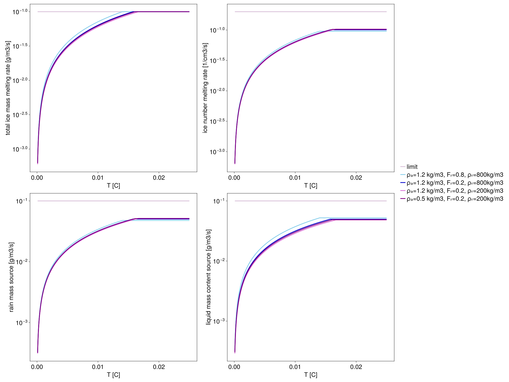

P3 Scheme
The P3Scheme.jl module implements the predicted particle properties (P3) scheme for ice-phase microphysics developed by [24]. The P3 scheme is a 2-moment, bulk scheme involving a single ice-phase category with 4 degrees of freedom: total ice content, rime content, rime volume, and number concentration. Traditionally, cloud ice microphysics schemes use various predefined categories (such as ice, graupel, or hail) to represent ice modes, but the P3 scheme sidesteps the problem of prescribing transitions between ice categories by adopting a single ice category and evolving its properties. This simplification aids in attempts to constrain the scheme's free parameters.
The prognostic variables are:
- $N_{ice}$ - number concentration 1/m3
- $L_{p3, tot}$ - total ice particle mass content kg/m3
- $L_{rim}$ - rime mass content kg/m3
- $B_{rim}$ - rime volume - (volume of rime per total air volume: dimensionless)
The original paper [24] uses symbol $q$ to denote the mass of a tracer per volume of air (named mass mixing ratio). In our documentation of the 1-moment and 2-moment schemes we used $q$ to denote the mass of a tracer per mass of air (named specific humidity). To keep the notation consistent between the 1,2-moment schemes and P3, and to highlight the difference between normalizing by air mass or volume, we denote the mass of a tracer per volume of air as $L$ (named content).
Assumed particle size relationships
The mass $m$ and projected area $A$ of particles as a function of maximum particle dimension $D$ are piecewise functions with variable thresholds described by the following table.
| particle properties | condition(s) | m(D) relation | A(D) relation |
|---|---|---|---|
| small, spherical ice | $D < D_{th}$ | $\frac{\pi}{6} \rho_i \ D^3$ | $\frac{\pi}{4} D^2$ |
| large, unrimed ice | $L_{rim} = 0$ and $D > D_{th}$ | $\alpha_{va} \ D^{\beta_{va}}$ | $\gamma \ D^{\sigma}$ |
| dense nonspherical ice | $L_{rim} > 0$ and $D_{gr} > D > D_{th}$ | $\alpha_{va} \ D^{\beta_{va}}$ | $\gamma \ D^{\sigma}$ |
| graupel (completely rimed, spherical) | $L_{rim} > 0$ and $D_{cr} > D > D_{gr}$ | $\frac{\pi}{6} \rho_g \ D^3$ | $\frac{\pi}{4} D^2$ |
| partially rimed ice | $L_{rim} > 0$ and $D > D_{cr}$ | $\frac{\alpha_{va}}{1-F_{rim}} D^{\beta_{va}}$ | $F_{rim} \frac{\pi}{4} D^2 + (1-F_{rim})\gamma \ D^{\sigma}$ |
where:
- $D_{th}$, $D_{gr}$, $D_{cr}$ are particle size thresholds in $m$,
- $\rho_i$ is cloud ice density in $kg m^{-3}$,
- $\beta_{va} = 1.9$ is a dimensionless parameter from [25] (based on measurements of vapor diffusion and aggregation in midlatitude cirrus),
- $\alpha_{va} = 7.38 \; 10^{-11} \; 10^{6 \beta_{va} - 3}$ in $kg \; m^{-β_{va}}$ is a parameter modified for units from [25] in base SI units (also based on measurements of vapor diffusion and aggregation in midlatitude cirrus),
- $\rho_g$ is the bulk density of graupel in $kg \; m^{-3}$
- $\gamma = 0.2285$ ($m^{2 - \sigma}$) where
- $\sigma = 1.88$ (dimensionless), both from the aggregates of side planes, columns, bullets, and planar polycrystals in [26].
The first threshold is solely determined by the free parameters: $D_{th} = (\frac{\pi \rho_i}{6\alpha_{va}})^{\frac{1}{\beta_{va} - 3}}$. The remaining thresholds: $D_{gr}$, $D_{cr}$, as well as the bulk density of graupel $\rho_{g}$, and the bulk density of the unrimed part $\rho_d$ form a nonlinear system:
- $D_{gr} = (\frac{6\alpha_{va}}{\pi \rho_g})^{\frac{1}{3 - \beta_{va}}}$
- $D_{cr} = [ (\frac{1}{1-F_{rim}}) \frac{6 \alpha_{va}}{\pi \rho_g} ]^{\frac{1}{3 - \beta_{va}}}$
- $\rho_g = \rho_r F_{rim} + (1 - F_{rim}) \rho_d$
- $\rho_d = \frac{6\alpha_{va}(D_{cr}^{\beta{va} \ - 2} - D_{gr}^{\beta{va} \ - 2})}{\pi \ (\beta_{va} \ - 2)(D_{cr}-D_{gr})}$
where
- $F_{rim} = \frac{L_{rim}}{L_{ice}}$ is the rime mass fraction and $L_{ice}$ the solid ice mass content,
- $\rho_{r} = \frac{L_{rim}}{B_{rim}}$ is the predicted rime density.
TODO - Check units, see in issue #151
Below we show the m(D) and a(D) regimes replicating Figures 1 (a) and (b) from [24]. We also show the density as a function of D. Note that because graupel is completely filled with rime, the density ($\rho_{g}$) is independent of $D$ between $D_{gr}$ and $D_{cr}$. Following [24], for nonspherical particles $\rho_{ice}$is assumed to be equal to the mass of the particle divided by the volume of a sphere with the same particle size
include("plots/P3SchemePlots.jl")CairoMakie.Screen{SVG}

Assumed particle size distribution
Following [24], the scheme assumes a gamma distribution for the concentration of ice particles per unit volume based on particle size measurements obtained by [27] in tropical and midlatitude ice clouds and implemented by [28]:
\[N'(D) = N_{0} D^\mu \, e^{-\lambda \, D}\]
where:
- $N'$ is the number concentration in $m^{-4}$
- $D$ is the maximum particle dimension in $m$,
- $N_0$ is the intercept parameter in $m^{-5 - \mu }$,
- $\mu$ is the shape parameter (dimensionless),
- $\lambda$ is the slope parameter in $m^{-1}$.
We assume $\mu \ = 0.00191 \; \lambda \ ^{0.8} - 2$. Following [28] we limit $\mu \ \in (0,6)$. A negative $\mu$ can occur only for very small mean particle sizes$\frac{1}{\lambda} < ~0.17 mm$.
The model predicted ice number concentration and ice content are defined as
\[N_{ice} = \int_{0}^{\infty} \! N'(D) \mathrm{d}D\]
\[L_{p3, tot} = \int_{0}^{\infty} \! m(D) N'(D) \mathrm{d}D\]
Calculating shape parameters
As a next step we need to find the mapping between predicted moments of the size distribution $N_{ice}$ and $L_{ice}$ and the shape parameters $\lambda$ and $N_0$. Solving for $N_{ice}$ is relatively straightforward:
\[N_{ice} = \int_{0}^{\infty} \! N'(D) \mathrm{d}D = \int_{0}^{\infty} \! N_{0} D^\mu \, e^{-\lambda \, D} \mathrm{d}D = N_{0} (\lambda \,^{-(\mu \, + 1)} \Gamma \,(1 + \mu \,))\]
$L_{p3, tot}$ depends on the variable mass-size relation $m(D)$ defined above. We solve for $L_{p3, tot}$ in a piece-wise fashion defined by the same thresholds as $m(D)$. As a result $L_{p3, tot}$ can be expressed as a sum of incomplete gamma functions, and the shape parameters are found using iterative solver.
| condition(s) | $L_{p3, tot} = \int \! m(D) N'(D) \mathrm{d}D$ | gamma representation |
|---|---|---|
| $D < D_{th}$ | $\int_{0}^{D_{th}} \! \frac{\pi}{6} \rho_i \ D^3 N'(D) \mathrm{d}D$ | $\frac{\pi}{6} \rho_i N_0 \lambda \,^{-(\mu \, + 4)} (\Gamma \,(\mu \, + 4) - \Gamma \,(\mu \, + 4, \lambda \,D_{th}))$ |
| $L_{rim} = 0$ and $D > D_{th}$ | $\int_{D_{th}}^{\infty} \! \alpha_{va} \ D^{\beta_{va}} N'(D) \mathrm{d}D$ | $\alpha_{va} \ N_0 \lambda \,^{-(\mu \, + \beta_{va} \, + 1)} (\Gamma \,(\mu \, + \beta_{va} \, + 1, \lambda \,D_{th}))$ |
| $L_{rim} > 0$ and $D_{gr} > D > D_{th}$ | $\int_{D_{th}}^{D_{gr}} \! \alpha_{va} \ D^{\beta_{va}} N'(D) \mathrm{d}D$ | $\alpha_{va} \ N_0 \lambda \,^{-(\mu \, + \beta_{va} \, + 1)} (\Gamma \,(\mu \, + \beta_{va} \, + 1, \lambda \,D_{th}) - \Gamma \,(\mu \, + \beta_{va} \, + 1, \lambda \,D_{gr}))$ |
| $L_{rim} > 0$ and $D_{cr} > D > D_{gr}$ | $\int_{D_{gr}}^{D_{cr}} \! \frac{\pi}{6} \rho_g \ D^3 N'(D) \mathrm{d}D$ | $\frac{\pi}{6} \rho_g N_0 \lambda \,^{-(\mu \, + 4)} (\Gamma \,(\mu \, + 4, \lambda \,D_{gr}) - \Gamma \,(\mu \, + 4, \lambda \,D_{cr}))$ |
| $L_{rim} > 0$ and $D > D_{cr}$ | $\int_{D_{cr}}^{\infty} \! \frac{\alpha_{va}}{1-F_{rim}} D^{\beta_{va}} N'(D) \mathrm{d}D$ | $\frac{\alpha_{va}}{1-F_{rim}} N_0 \lambda \,^{-(\mu \, + \beta_{va} \, + 1)} (\Gamma \,(\mu \, + \beta_{va} \, + 1, \lambda \,D_{cr}))$ |
where $\Gamma \,(a, z) = \int_{z}^{\infty} \! t^{a - 1} e^{-t} \mathrm{d}D$ and $\Gamma \,(a) = \Gamma \,(a, 0)$ for simplicity.
In our solver, we approximate $\mu$ from $L/N$ and keep it constant throughout the solving step. We approximate $\mu$ by an exponential function given by the $L/N$ points corresponding to $\mu = 6$ and $\mu = 0$. This is shown below as well as how this affects the solvers $\lambda$ solutions.
include("plots/P3LambdaErrorPlots.jl")CairoMakie.Screen{SVG}

An initial guess for the non-linear solver is found by approximating the gamma functions as a simple linear function from $x = \log{(L/N)}$ to $y = \log{(\lambda)}$. The equation is given by $(x - x_1) = A \; (y - y_1)$ where $A = \frac{x_1 - x_2}{y_1 - y_2}$. $y_1$ and $y_2$ define $log(\lambda)$ values for three $L/N$ ranges
| L/N | $y_1$ | $y_2$ |
|---|---|---|
| $L/N >= 10^-8$ | $1$ | $6 * 10^3$ |
| $2 * 10^9 <= L/N < 10^-8$ | $6 * 10^3$ | $3 * 10^4$ |
| $L/N < 2 * 10^9$ | $4 * 10^4$ | $10^6$ |
We use this approximation to calculate initial guess for the shape parameter $\lambda_g = \lambda_1 (\frac{L}{L_1})^{(\frac{y_1 - y_2}{x_1 - x_2})}$.
include("plots/P3ShapeSolverPlots.jl")CairoMakie.Screen{SVG}

Using this approach we get the following relative errors for $\lambda$
include("plots/P3LambdaErrorPlots.jl")CairoMakie.Screen{SVG}

Terminal Velocity
We use the [4] velocity parametrization:
\[V(D) = \phi^{\kappa} \sum_{i=1}^{j} \; a_i D^{b_i} e^{-c_i \; D}\]
where
\[\phi = (16 \rho_{ice}(D)^2 A(D)^3) / (9 \pi m(D)^2)\]
is the aspect ratio, and $\kappa$, $a_i$, $b_i$ and $c_i$ are the free parameters.
The aspect ratio of a spheroid is defined $\phi = \frac{a}{c}$, where $a$ is the equatorial radius and $c$ is the distance from the pole to the center. In terms of $a$ and $c$, a spheroid's volume can be represented as $V(a, c) = \frac{4}{3} \pi a^2 c$, and its cross-sectional area can be assumed $A(a, c) = \pi a c$. We use $m(D)$ and $A(D)$ from P3, so by substituting $m(a, c) = \rho_{ice} V(a, c)$, $A(a, c)$ for $m(D)$, $A(D)$ into the formulation of aspect ratio above, we demonstrate agreement with the definition $\phi = \frac{a}{c}$.
Note that $\phi = 1$ corresponds to spherical particles (small spherical ice ($D < D_{th}$) and graupel ($D_{gr} < D < D_{cr}$)). The plot provided below helps to visualize the transitions between spherical and nonspherical regimes.
include("plots/P3AspectRatioPlot.jl")CairoMakie.Screen{SVG}

The mass-weighted fall speed ($V_m$) and the number-weighted fall speed ($V_n$) are calculated as
\[V_m = \frac{\int_{0}^{\infty} \! V(D) m(D) N'(D) \mathrm{d}D}{\int_{0}^{\infty} \! m(D) N'(D) \mathrm{d}D}\]
\[V_n = \frac{\int_{0}^{\infty} \! V(D) N'(D) \mathrm{d}D}{\int_{0}^{\infty} \! N'(D) \mathrm{d}D}\]
We also plot the mass-weighted mean particle size $D_m$ which is given by:
\[D_m = \frac{\int_{0}^{\infty} \! D m(D) N'(D) \mathrm{d}D}{\int_{0}^{\infty} \! m(D) N'(D) \mathrm{d}D}\]
Below we provide plots of these relationships for small, medium, and large $D_m$: the first row highlights the particle size regime, the second displays $D_m$ of the particles, the third shows the aspect ratio $\phi (D_m)$, the fourth shows $V_m$ without using aspect ratio in the computation (i.e. $\phi = 1$), and the final row exhibits $V_m$, computed using $\phi(D)$. They can be compared with Figure 2 from [24].
include("plots/P3TerminalVelocityPlots.jl")CairoMakie.Screen{SVG}

Liquid Fraction
To allow for the modeling of mixed-phase particles with P3, a new prognostic variable can be introduced: $L_{liq}$, the content of liquid on mixed-phase particles. As described in [29], this addition to the framework of P3 opens the door to tracking the gradual melting (and refreezing) of a particle population. Here, we describe the characteristics of the scheme with the addition of $L_{liq}$.
Liquid fraction, analogous to $F_{rim}$ for rime, is defined $F_{liq} = \frac{L_{liq}}{L_{p3, tot}}$ where $L_{p3, tot} = L_{ice} + L_{liq}$ and where $L_{ice}$ is the solid ice mass content which includes rime mass content and mass grown by vapor deposition. This is important notably for $F_{rim} = \frac{L_{rim}}{L_{ice}}$ — which differs now from $F_{rim} = \frac{L_{rim}}{L_{p3, tot}}$ because we want to normalize only by solid ice mass content for $F_{rim}$.
Based on Fig. 1 from [29], we can expect the accumulation of liquid on an ice core to increase velocities of small particles for all $F_{rim}$ values. Below, we reproduce this figure with $\rho_{r} = 900 kg m^{-3}$, and, notably, we continue to use the terminal velocity parameterizations from [4] (described here for rain), whereas [29] uses [30] for snow and ice and [31] for rain. Despite these different choices, we reproduce similar behavior with, and we include a dashed line for the velocity computed without aspect ratio. This dashed line mimics velocity with $F_{rim} = 1$, since both $\phi = 1$ and $F_{rim} = 1$ shift us into a spherical particle regime.
include("plots/Cholette2019_fig1.jl")CairoMakie.Screen{SVG}

The addition of the liquid fraction does not change the thresholds $D_{th}$, $D_{gr}$, $D_{cr}$, since the threshold regime depends only on ice core properties.
However, the assumed particle properties become $F_{liq}$-weighted averages of particles' solid and liquid components:
\[m(D, F_{liq}) = (1 - F_{liq}) m(D, F_{liq} = 0) + F_{liq} m_{liq}(D)\]
\[A(D, F_{liq}) = (1 - F_liq) A(D, F_{liq} = 0) + F_{liq} A_{liq}(D)\]
where $m_{liq}(D) = \frac{\pi}{6} \rho_{liq} D^3$ and $A_{liq}(D) = \frac{\pi}{4} D^2$.
When calculating shape parameters and integrating over the particle size distribution (PSD), it is important to keep in mind whether the desired moment of the PSD is tied only to ice (in which case we concern ourselves with the ice core diameter $D_{core}$) or to the whole mixed-phase particle (in which case we need $D_p$). If calculating the ice core parameters, $F_{liq} = 0$ is passed into the solver framework as indicated in the code.
For the above particle properties and for terminal velocity, we use the PSD corresponding to the whole mixed-phase particle, so our terminal velocity of a mixed-phase particle is:
\[V(D_{p}, F_{liq}) = (1 - F_{liq}) V_{ice}(D_{p}) + F_{liq} V_{rain}(D_{p})\]
To continue with the same plotting format as we see above for terminal velocity, below, we show terminal velocity with $F_{liq} = 0.0, 0.5, 0.9$ using the mass-weighted terminal velocity with aspect ratio. Clearly, the velocity increases with $F_{liq}$ and becomes decreasingly dependent on $F_{rim}$ and $\rho_{r}$ as we shrink the size of the ice core. Of note relating to our calculation of terminal velocity with liquid fraction, we let $F_{liq} = 0$ in our calculation of $\phi$. This is because we want $V_{ice}(D_{p})$ (velocity of a mixed-phase particle treating it as an ice particle with the same D).
include("plots/P3TerminalVelocityPlots_WithFliq.jl")CairoMakie.Screen{SVG}

Visualizing mass-weighted terminal velocity as a function of $F_{liq}$, $F_{rim}$ with $\rho_{r} = 900 kg m^{-3}$ for small, medium, and large particles, we have mostly graupel ($D_{gr} < D < D_{cr}$) for small $D_m$ and mostly partially rimed ice ($D > D_{cr}$) for medium and large $D_m$. Thus, we can attribute the non-monotonic behavior of velocity with $F_liq$ in the medium and large $D_m$ plots to the variations in $\phi$ caused by nonspherical particle shape, whereas the small $D_m$ plot confirms a mmore monotonic change in $V_m$ for spherical ice. The $L$ and $N$ values used to generate small, medium, and large $D_{m}$ are the same as in the plot above.
include("plots/P3TerminalVelocity_F_liq_rim.jl")CairoMakie.Screen{SVG}

When modifying process rates, we now need to consider whether they are concerned with the ice core or the whole particle, in addition to whether they become sources and sinks of different prognostic variables with the inclusion of $F_{liq}$. With the addition of liquid fraction, too, come new process rates.
TODO - Implement process rates, complete docs.
Heterogeneous Freezing
Immersion freezing is parameterized based on water activity and follows the ABIFM parameterization from [32]. See also the derivation notes about different ice nucleation parameterizations. The immersion freezing nucleation rate is computed by numerically integrating over the distribution of cloud droplets given by the 2-moment warm rain microphysics scheme from [13]. The rate is limited by the available cloud droplet number concentration and water content.
\[\frac{dN}{dt} = \int_{0}^{D_{max}} \! J_{ABIFM} A_a(D) N'(D) \mathrm{d}D\]
\[\frac{dQ}{dt} = \int_{0}^{D_{max}} \! J_{ABIFM} A_a(D) N'(D) m(D) \mathrm{d}D\]
where
- $J_{ABIFM}$ - is the immersion freezing nucleation rate,
- $A_a(D)$ - is the assumed surface area of insoluble ice nucleating particles,
- $N'(D)$ - number distribution of cloud droplets,
- $m(D)$ - assumed mass of a cloud droplet as a function of its diameter.
include("plots/P3ImmersionFreezing.jl")CairoMakie.Screen{SVG}

Melting
Melting rate is derived in the same way as in the 1-moment scheme. We assume the same ventilation factor parameterization as in [13], and use the terminal velocity parameterization from [4]. The $dm/dD$ derivative is computed for each P3 size regime, without taking into account $L_{liq}$, since melting is dependent only on the ice core and not on the entire mixed-phase particle. The bulk melting rates are computed by piecewise and numerically integrating over the ice core size distribution using the terminal velocity of the mixed-phase particle. Particles with $D < D_{th}$ are transferred directly to rain in one time step, whereas melting on particles with $D > D_{th}$ is a source of $L_{liq}$.
\[\begin{equation} \left. \frac{dL_{rai}}{dt} \right|_{melt} = \frac{4 \, K_{thermo}}{L_f} \left(T - T_{freeze}\right) \int_{0}^{D_{th}} \frac{dm(D)}{dD} \frac{F_v(D) N(D)}{D} \end{equation}\]
\[\begin{equation} \left. \frac{dL_{liq}}{dt} \right|_{melt} = \frac{4 \, K_{thermo}}{L_f} \left(T - T_{freeze}\right) \int_{D_{th}}^{\infty} \frac{dm(D)}{dD} \frac{F_v(D) N(D)}{D} \end{equation}\]
Sinks of $L_{p3, tot}$, $L_{rim}$, and $B_{rim}$ are calculated accordingly. The melting rate for number concentration is assumed to be proportional to the change in $L_{ice}$ from $\frac{dL_{rai}}{dt}$ since this represents an immediate transfer to rain rather than an accumulation of $L_{liq}$.
\[\begin{equation} \left. \frac{dN}{dt} \right|_{melt} = \frac{N}{L_{ice}} \left. \frac{dL_{rai}}{dt} \right|_{melt} \end{equation}\]
If $F_{liq} > 0.99$, $L_{p3, tot}$ is completely transferred to rain. All rates are limited by the total available mass contents and number concentration divided by model time step length.
include("plots/P3Melting.jl")CairoMakie.Screen{SVG}

Acknowledgments
Click on the P3 mascot duck to be taken to the repository in which the authors of [24] and others have implemented the P3 scheme in Fortran!